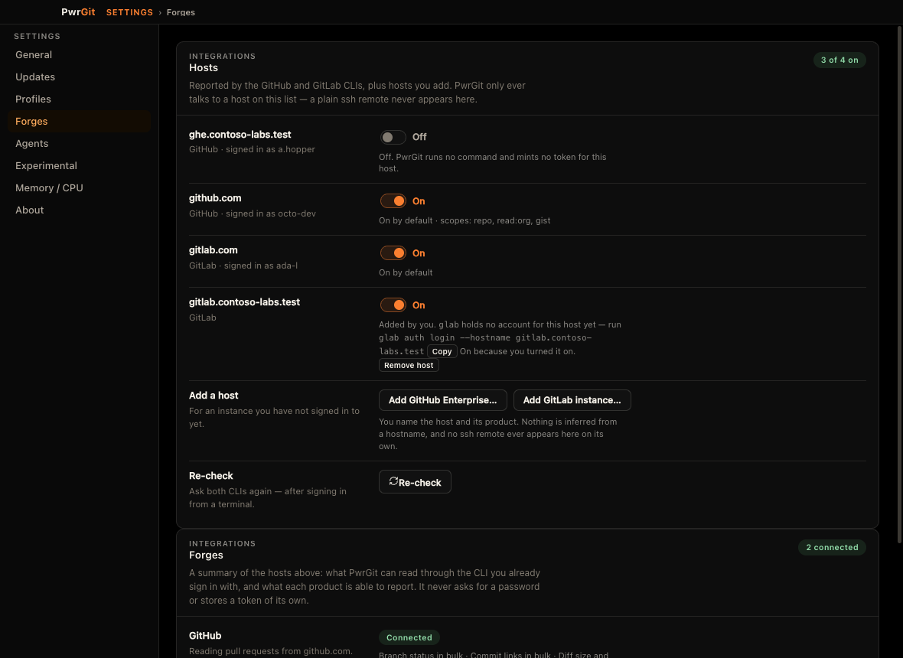
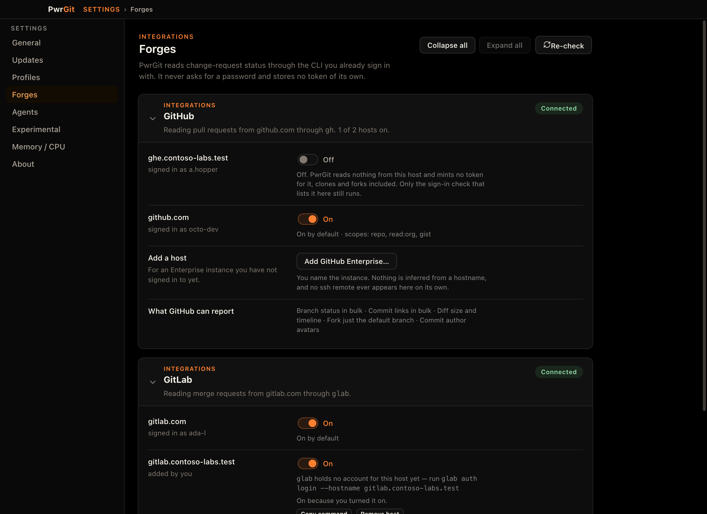
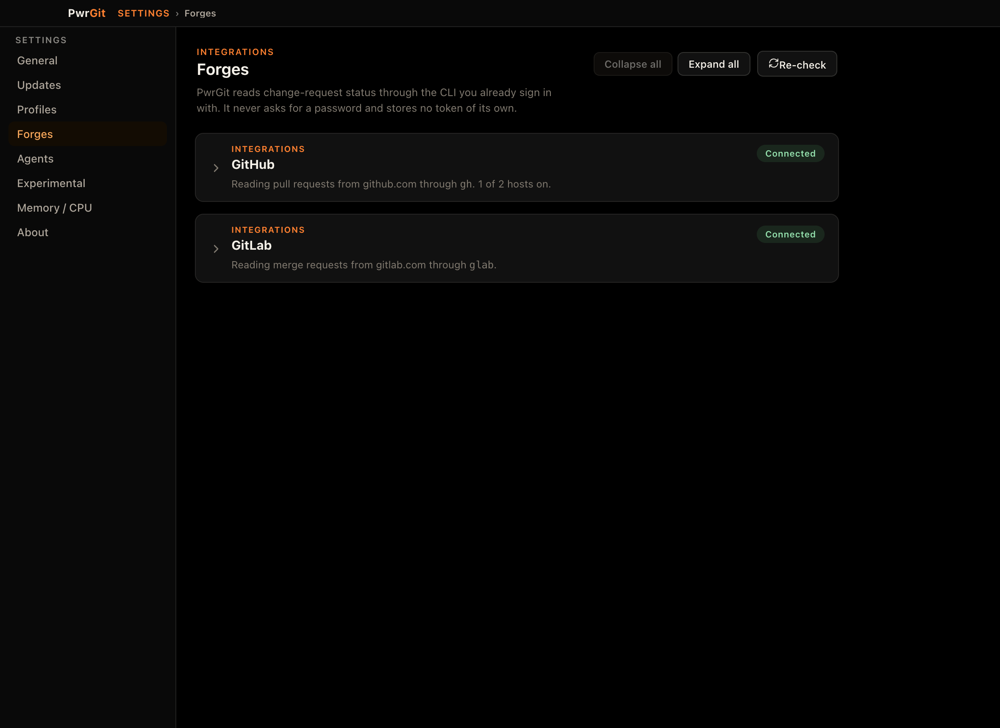

Captured from the shipped app on 2026-09-12, driven through its real UI. The host estate is
100% contrived — gh and glab are shell stubs on PATH, so no
real account, instance or token appears. Every number below was read off the live DOM, not a ruler.
The pane is not wrong about anything it says; it is the only pane in the window that opted out
of the layout every other pane uses, and it splits its two products in one half and merges them in the other.

.settings-content instead of
wrapping in .settings-stack, so it loses that rule's gap and its max-width.
INTEGRATIONS at the same size and weight. Nothing says one is a list
of instances and the other a summary of it.
GitHub · signed in as…
gh, glab) is signed in” scales to a third
product but still cannot say which one to go and fix — and this is the state
where naming the right sign-in matters most.
| Measured | Forges | Every other pane | Why |
|---|---|---|---|
| Card width | 919px | 760px | .settings-stack sets max-width: 760px |
| Gap between cards | 0px | 14px | …and gap: 14px |
| Sections that collapse | 0 of 2 | 0 of 3 | The machinery was dropped on import from PwrAgnt |
SettingsWindow.tsx §forges renders a bare fragment — <ForgeHostsSection/><ForgesSettings/> — where GeneralSettings, UpdatesSettings, DiagnosticsSettings, ProfilesSettings, AboutSettings, ExperimentalSettings and LocalAgentsSettings each open with <div class="settings-stack">.
The collapsible header was a deliberate drop, and the premise has expired.
SettingsLayout.tsx says so in its own header: “PwrAgnt’s collapsible-section
machinery is intentionally dropped — PwrGit’s panes are short enough to render flat.”
That was true of a three-card General pane. It is not true of a pane that already runs 1,512px at four
hosts and is about to gain a section per product, with a third product (Cursor Origin) queued behind
GitHub and GitLab.
These are independent of the product split in turn 3, and of each other. 2a is one wrapper
element and touches only this pane. 2b is a change to SettingsLayout and therefore
to every pane in the window — worth doing, worth doing on its own.
.settings-stack. The measured defect, gone, at 760px with 14px between cards.
Integrations
Reported by the GitHub and GitLab CLIs, plus hosts you add.
Integrations
A summary of the hosts above.
INTEGRATIONS in the same voice, still don’t fold, and
still split the products in one and merge them in the other.
Integrations
PwrGit reads change-request status through the CLI you already sign in with. It never asks for a password and stores no token of its own.
gh
Pull requests from 2 of 3 hosts.
glab
Merge requests from 1 of 2 hosts.
SettingsLayout. Landing it here changes every pane, so
it wants its own change and its own review.
The split the pane is asking for. Each product owns one card: its hosts, its own way in, and the two
questions only a product can answer — whether its CLI is installed, and what the integration
can report. That last pair is why this merges ForgesSettings into the host sections
rather than leaving it as a separate card: forge/AGENTS.md warns against folding
capabilities into host rows, because the sentence would repeat once per host and a missing CLI
would have nowhere to be reported. A per-product section is exactly the home that objection asks
for — stated once, and present even when the product has no hosts at all.

| Measured | Before | After | Every other pane |
|---|---|---|---|
| Card width | 919px | 760px | 760px |
| Gap between cards | 0px | 14px | 14px |
| Sections that collapse | 0 of 2 | 2 of 2 | all |

Integrations
PwrGit reads change-request status through the CLI you already sign in with. It never asks for a password and stores no token of its own.
gh
Pull requests, read from 1 of 2 hosts.
glab
Merge requests, read from 1 of 2 hosts.
glab holds no account here yet — run glab auth login --hostname gitlab.contoso-labs.test
GitHub · signed in as octo-dev becomes
signed in as octo-dev. The section already said it, on every row, once.
ForgesSettings already
computes. The tally it replaces (“3 of 4 on”) moves into the description, per product,
where it is checkable against the rows beneath it.
forge/AGENTS.md asks of them.
gh
No host is signed in to read pull requests from.
Run gh auth login in a terminal and this updates on its own.
glab
GitLab merge requests need the glab CLI.
Install the GitLab CLI (glab) to see merge-request status here.
cursor
Every Cursor Origin host is switched off.
gh nor glab”, then “No forge CLI
(gh, glab)” — and neither could point at one CLI.
Record<ForgeKind, …>
and the section appears.
What this deliberately does not change. No main-process work: forge:hosts already
returns kind on every row, so the grouping is a renderer concern. And the three behaviours
the current tests pin stay exactly as they are — Remove is gated on
kindSource === "config" and never on origin (gating it on origin
silently re-enabled a host somebody had switched off), the Add buttons stay disabled until the host list
has loaded, and an add writes {kind, enabled: true} because main merges rather than replaces.
It supersedes artboard 2a of “Forge Hosts — UX Review”, which drew the single
interleaved list. That artboard was right about the row anatomy and the evidence line, and is still the
reference for both; it is only the one-list-for-two-products decision that this replaces.
Captures: apps/desktop/e2e/design-shots.spec.ts — contrived gh/glab stubs from e2e/fixtures/forge-cli-stubs on PATH, PWRGIT_USER_DATA_DIR temp dir, dark theme, 1180×860. Re-shoot with PWRGIT_DESIGN_SHOTS=1. Measurements read from getBoundingClientRect() in the running app.